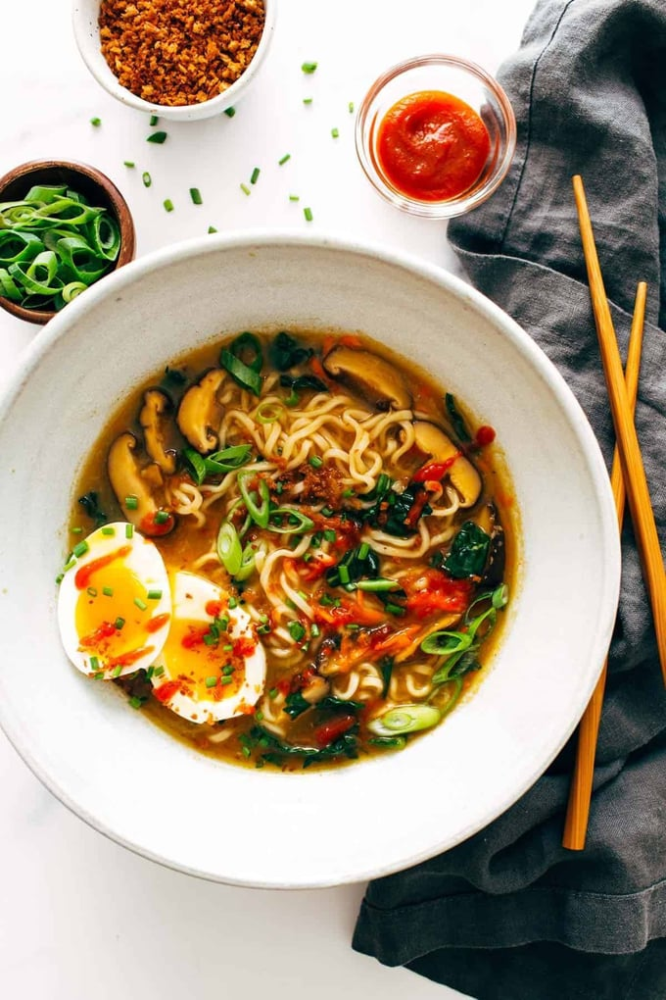

Ramen

Fresh vegetables? Quick and easy homemade broth? A soft-boiled egg and a pile of our favorite curly-cue packaged ramen noodles that remind us of college? That’s this homemade ramen.
On the flip side, this recipe leans more in the direction of I-have-a-package-of-ramen-and-some-vegetables-can-we-make-lunch practical. Sort of healthy and fast and a little nostalgic (packaged ramen!) but also fresh-ly delicious with a ton of flavor.
Ingredients
- Ramen noodles (our classic Maruchan package is all we need, sans the seasoning!)
- Garlic and ginger
- Broth (chicken or veg)
- Dried shiitake mushrooms
- Veggies like carrots or kale
- All your favorite toppings like some panko, egg, chili oil, etc.
Steps
- Stir-Fry Aromatics: Garlic and ginger, what a delicious duo. This is where the flavor is, friends.
- Make Your (Easy!) Broth: Add some chicken broth and dried shiitake mushrooms for some umami punch.
- Add Noodles: Cook your noodles right in the broth with some scallions (more flavor, please!).
- Add Veg: Thinly sliced kale, shredded carrots, whatever you’d like! Cook until just tender.
- Top It Off: Add some crunchy panko crumbs, a soft-boiled egg, chili oil, hot sauce, sesame oil, and/or soy sauce, whatever your heart desires.